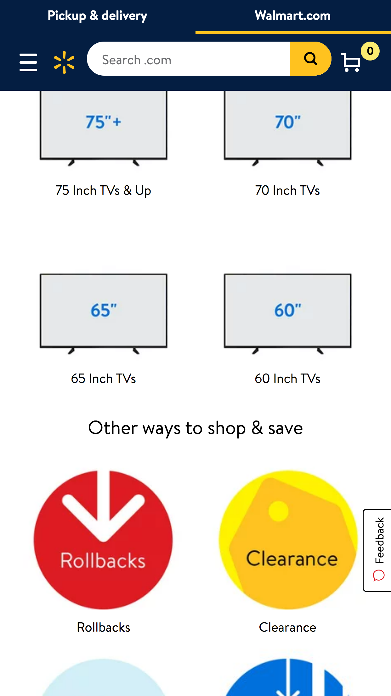

Visual Hierarchy
Walmart
Walmart WebstieThe principle of Visual Hierarchy consists in the order in which your attention is pulled from one object to another in a composition. In this case, the viewer first sees the image of the iPhone in the center, then he or she looks to the right, and them up and down.
Proximity
Walmart
Walmart Website for Mother's DayProximity is one of the main principles of design, which are Proximity, Alignment, Repetition and Contrast (PARC). This principle refers to the distance between objects.
Contrast
Walmart
Walmart Website for Eletronics Contrast in classified as one of the PARC principles. It's one of the most important principles. Contrast is about the differences between objects in a composition. As we can see in the example above, the background in the images are composed with different colors.